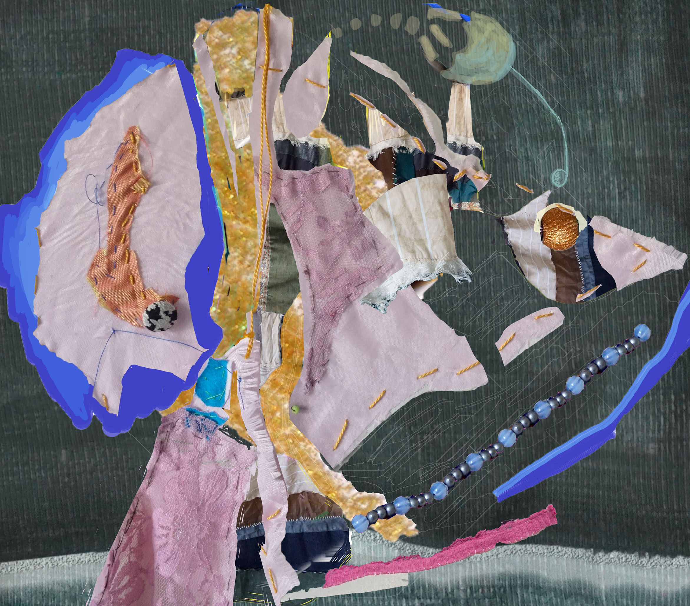

alexandra pambouka
I am a visual artist
with a high environmental and social concern
Main subjects of interest
sustainability, the human relationship with the natural environment,
rituality, folk and kitsch culture,
the comparison of engaging people in contemporary art and folk art
I mainly use
traditional craft methods and natural or upcycled materials,
familiar forms and materials in a non habitual way
Recently, I have developed digital artworks
which combine my physical textile artworks and digital drawings,
in the process of adapting to a new non tactile environment.
Visual Arts
Work
Nature's symbols
While nature has been destroyed by industries and overconsumption, industries produce objects that resemble natural world (animals, plants, etc). Upcycled textiles and other upcycled materials


Nature folk kitch
Trying to identify the connection between nature, folk culture and kitch culture digital assamblages of digital and physical artworks

Continuous thread
A socially engaged project that is presented diferently each time. The installation is a crochet of jute twin CONTINUOUS THREAD ARCHIVE